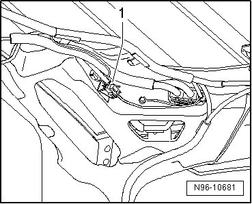

Central Locking and Anti-Theft Alarm System Antenna, from 11.04
Central Locking and Anti-Theft Alarm System Antenna, from 11.04
From 11.04, the central locking and anti-theft alarm system antenna (R47) is a dipole antenna in the rear spoiler.
• It is not possible to repair the antenna, since this would impair the reception quality.
• If damaged, it is necessary to replace the Central Locking and Anti-theft Alarm System Antenna (R47). Replace the rear lid wiring harness.
Removing
- Remove the rear spoiler.
- Lower the headliner in the rear lid area so the antenna wire connector - 1 - above the right D-pillar can be accessed.

- Disconnect the antenna connector - 1 - and all additional rear lid wiring harness connectors and loosen the wiring harness from all the wire retainers.
Installing
- Insert the new antenna in the coupling - 1 - and route the rear lid wiring harness in the same original path.
- Secure the new rear lid wiring harness at the wire retainers to prevent rattling noises.